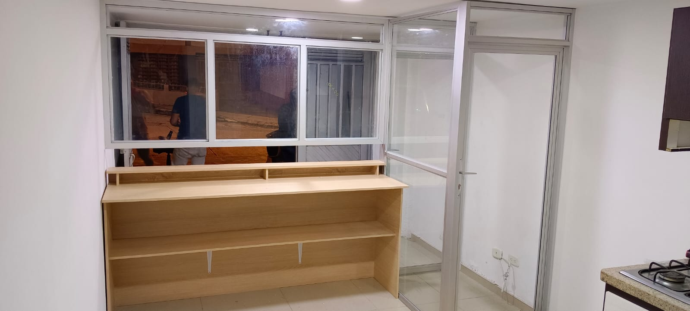
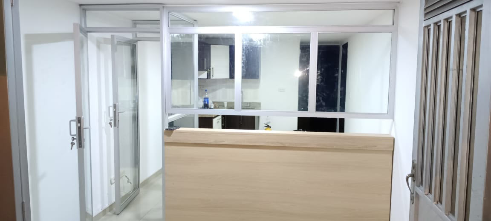

Proyectos Destacados
 
Ingeniería de Calidad
Construcciones JASMIDA S.A.S. es una empresa de construcción especializada en ingeniería de calidad.
Nuestro enfoque se basa en la eficiencia, eficacia y vanguardia, brindando los mejores proyectos de ingeniería a nuestros clientes.
Nuestra cobertura incluye las siguientes áreas geográficas:
Bogotá, Cundinamarca, Risaralda, Caldas, Tolima y Cesar.
Trabajamos de cerca con nuestros clientes para ofrecer resultados excepcionales y cumplir con los estándares más exigentes.
No importa dónde te encuentres dentro de esta área de cobertura, estamos dispuestos a ayudarte a alcanzar tus objetivos de construcción de manera eficiente y efectiva.
Ing. Jason Camilo Cuellar Cepeda
Especialista en Gerencia de Proyectos
Cel: 3115298388
Email: camilocuellarcepeda@hotmail.com
NIT: 901705743-9